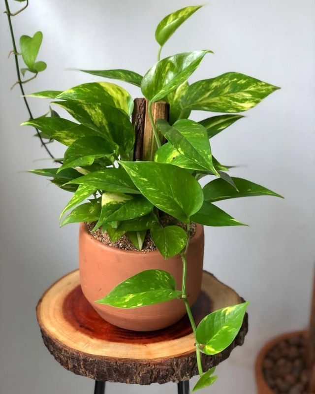

Perfil da planta:Jiboia
Informacoes

- Frequência de Rega: 2 vezes por semana
- Luz Ideal: Meia-sombra (luz indireta)
Simulacao de crescimento da planta
-
Fase 1: Brotacao (Dia 1 a 15)
Mantenha a terra levemente úmida. As primeiras raízes estão se fixando no substrato.
-
Fase 2: Crescimento Vegetativo (Dias 16 em diante)
Status atual: Em andamento. O ideal é adubar a cada 30 dias com NPK 10-10-10.